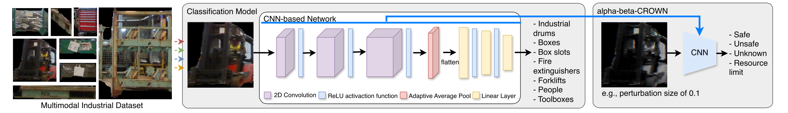
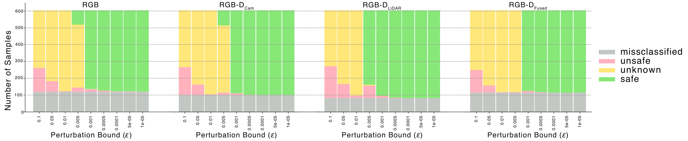

The project focuses on applying formal neural network verification to enhance the robustness and safety of the 3D vision system being developed for the Autonomous Mobile Robots (AMRs) in the GreenAuto PRR initiative. The AMR forklift 3D vision system being developed to detect humans, ensuring safe logistics operations. Given the safety-critical nature of this task, the collaboration between CMU and Portuguese partners aims to integrate formal neural network verification techniques to improve system robustness against real-world anomalies, such as corrupted images and adversarial attacks. By systematically verifying the neural networks used in the AMR’s 3D vision system, the project will ensure that these AI models can safely handle anomalies and meet industrial safety standards. This joint effort between CMU, ISR-UC and Flowbotic will provide a solution that not only advances scientific knowledge but also has practical applications in logistics automation within the automotive industry.
It proposes a collaborative research effort between Carnegie Mellon University (CMU) and Portuguese partners to improve the safety and robustness of AI systems used in industrial robotics, specifically focusing on neural network-based vision systems in Autonomous Mobile Robots (AMRs). The primary goal is to apply formal neural network verification to validate the AI model's robustness, ensuring safe operation in scenarios where the AMR encounters anomalies corrupted images and adversarial attacks, as part of the GreenAuto initiative.

Robustness evaluation pipeline, from dataset construction and model training to formal verification under perturbations.

Formal verification results for the evaluated models under different perturbations using the α,β-CROWN verifier.
Peer-reviewed conference papers published as part of this project.
Abreu, M., Garrote, L., Bento, L.C., Schmerl, B., Nunes, U.J., & Garlan, D. (2026).
Formal Verification of Deep Neural Networks for Image Classification in Industrial Environments.
16th International Conference on Information Science and Technology (ICIST), Coimbra, Portugal, pp. 385–393.
DOI: 10.1109/ICIST71072.2026.11727805
Costa, M. et al. (2026).
Trustworthy Neural Traffic Sign Recognition: Attacks, Explanations, and Verification.
16th International Conference on Information Science and Technology (ICIST), Coimbra, Portugal, pp. 520–528.
DOI: 10.1109/ICIST71072.2026.11727713
Abreu, M., Borges, E., Garrote, L., Mendes, A., & Nunes, U.J. (2025).
DepthTriFusion: A Three-Stream RGB-LiDAR-Normal Pipeline for Depth Estimation.
In: Pinto, V.H., Lima, J., Dias, A., Ferre, M. (eds) ROBOT 2025: Advances in Robotics. Lecture Notes in Networks and Systems, vol 2044. Springer, Cham.
DOI: 10.1007/978-3-032-30156-7_43
Garrote, L., Borges, E., Mendes, A., & Nunes, U.J. (2025).
The Impact of Loss Functions and Architectures in Object Re-identification: A Comparative Study.
In: Pinto, V.H., Lima, J., Dias, A., Ferre, M. (eds) ROBOT 2025: Advances in Robotics. Lecture Notes in Networks and Systems, vol 2044. Springer, Cham.
DOI: 10.1007/978-3-032-30156-7_38
Abreu, M., Borges, E., Perdiz, J., Garrote, L., Mendes, A., & Nunes, U.J. (2026).
Attention-Based Multimodal Fusion for Robust 6D Pose Estimation in Cluttered Industrial Environments.
2026 IEEE International Conference on Autonomous Robot Systems and Competitions (ICARSC), Barcelos, Portugal, pp. 124–131.
DOI: 10.1109/ICARSC70216.2026.11523333